- Born: Aug 12, 1932
- Apostle: Apr 7, 1984
- Prophet: Oct 14, 2025
"The number of good things we can do far exceeds the time available to accomplish them."
"The number of good things we can do far exceeds the time available to accomplish them."
"Joy is powerful, and focusing on joy brings God’s power into our lives."
"The Lord is in the details of our lives."
"May we go with determination to try a little harder to be a little better."
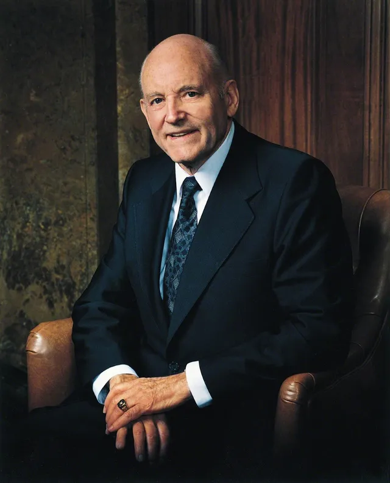
"To give of oneself is a holy gift."
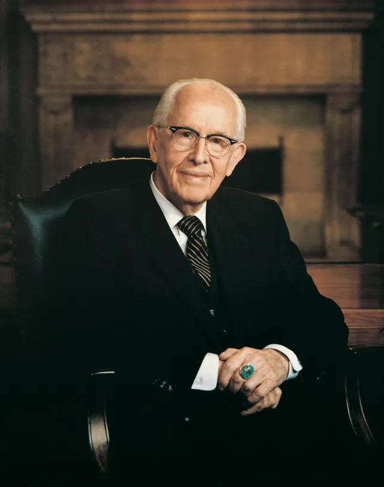
"Repentance means change, and it takes a humble person to change."
"God does notice us, and he watches over us."
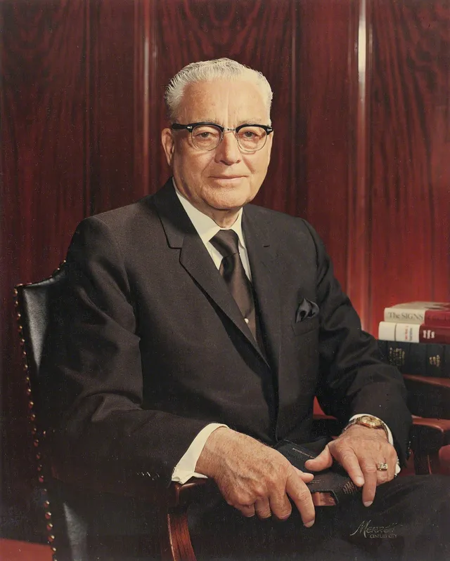
"You cannot lift another soul until you are standing on higher ground than he is."
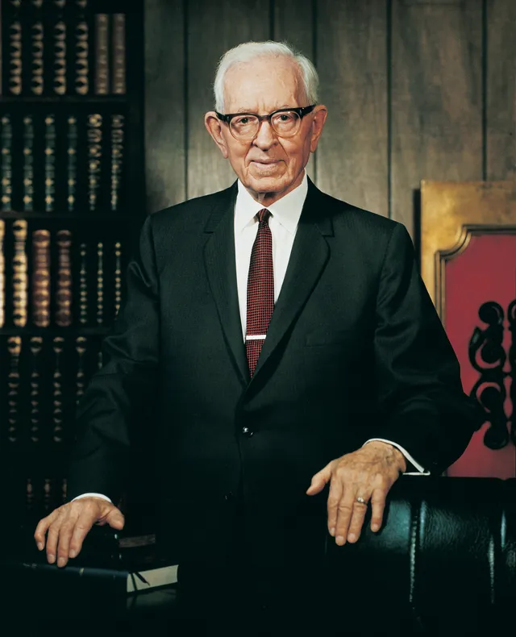
"We are commanded to love one another."
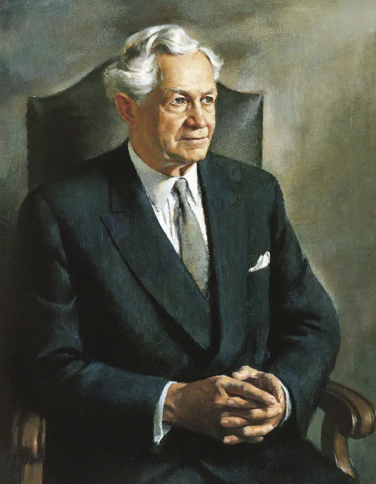
"True Christianity is love in action."
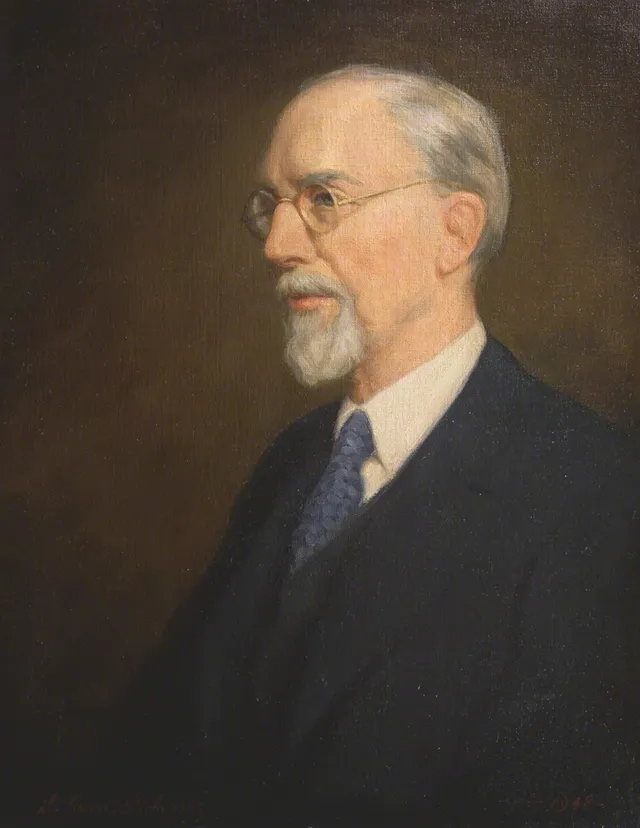
"Let us do better than we have ever done before."
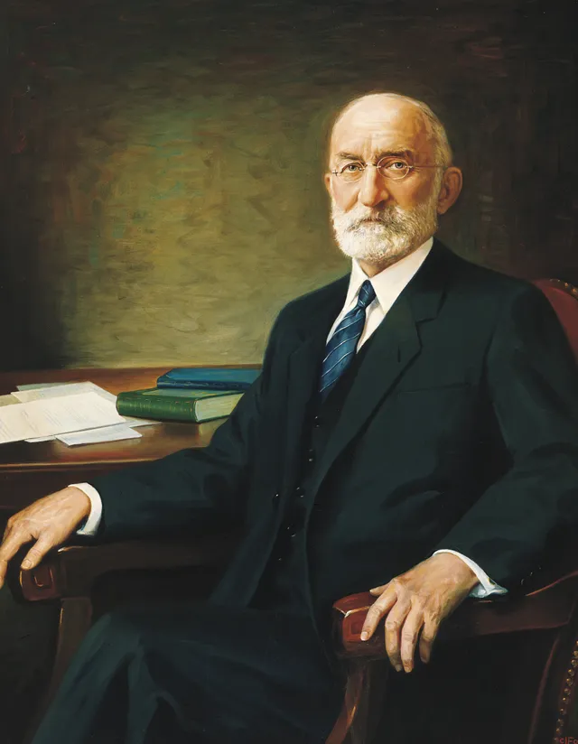
"Faith and knowledge without practice are of no value."
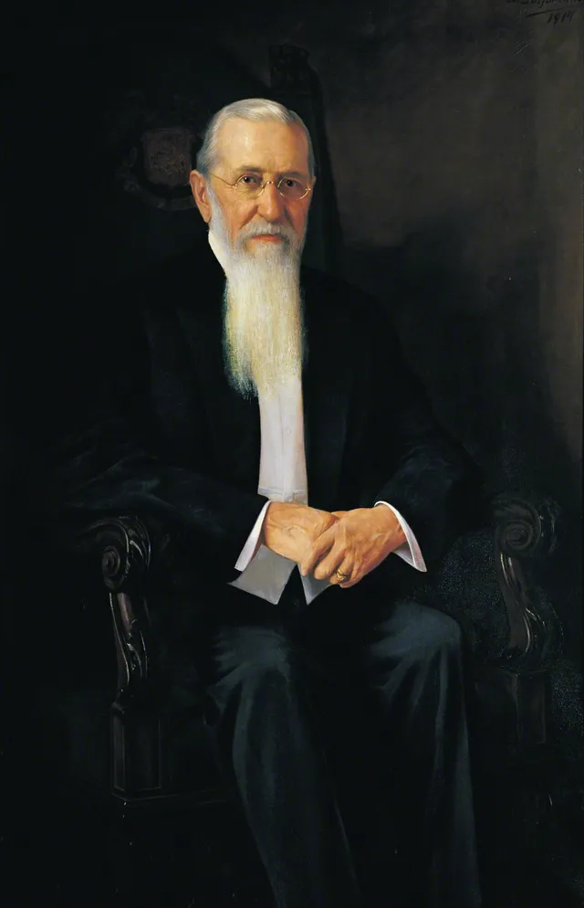
"My religion teaches me to love all men."
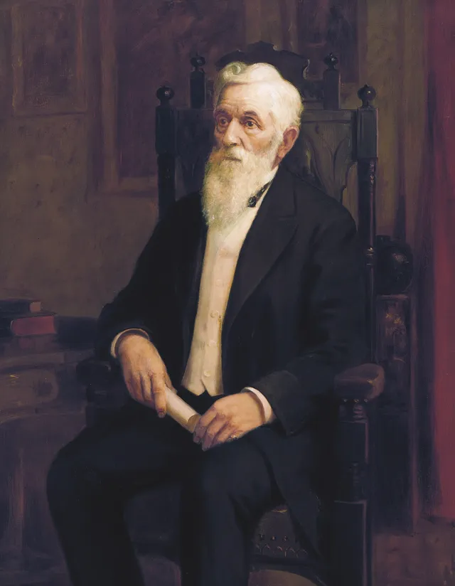
"Do not expect to become perfect at once."
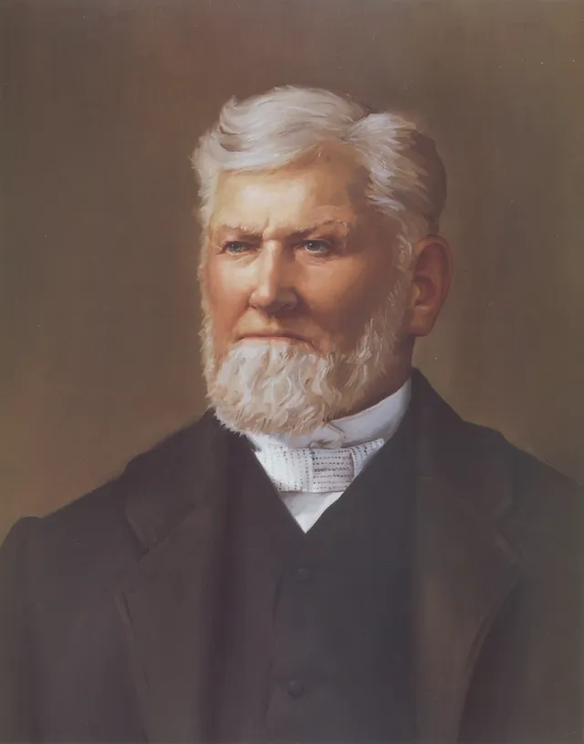
"We are safe as long as we do our duty."
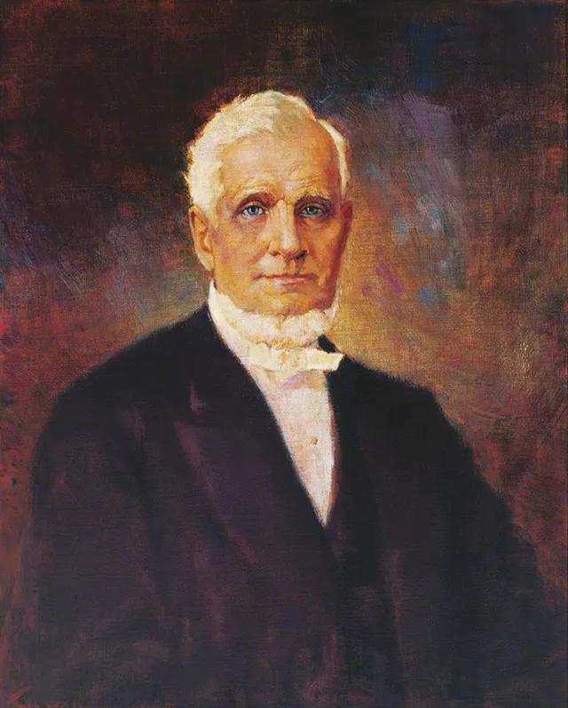
"Let us cultivate the spirit of love and kindness, and let every little unpleasantness be buried."
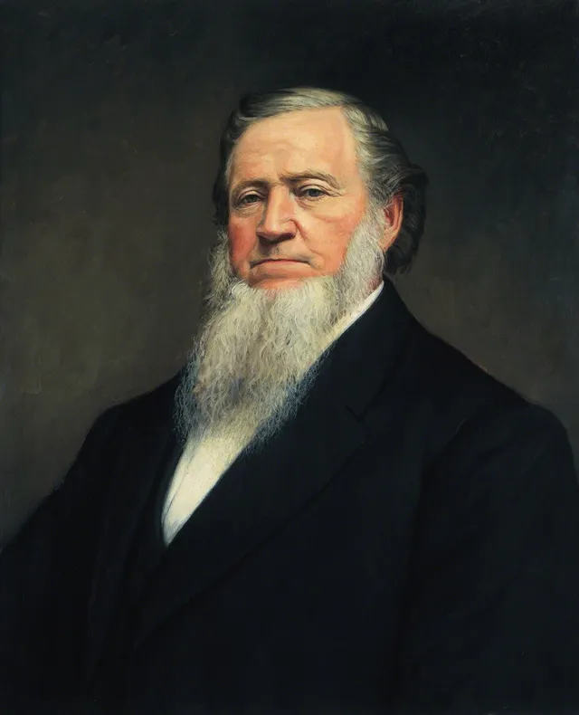
"If we do not feel like it, we should pray till we do."
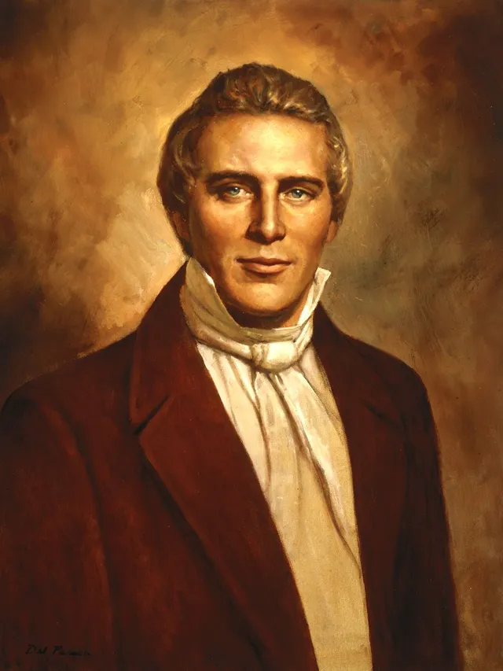
"When the Lord commands, do it."